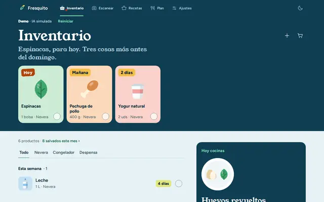

Fresquito
Día a díav4.0 · demo públicaLo que hay en tu nevera, antes de que caduque.
Haz una foto a la nevera, la despensa o el ticket y la IA apunta qué tienes, te avisa de lo que caduca y te propone recetas según tus preferencias (fitness, vegana, picante…); lo que falta pasa a tu lista de la compra. Web (PWA) y Android, con modelos de IA gratuitos por defecto.
- React
- TypeScript
- PWA
- Android (Capacitor)
- IA
Probar la demo de FresquitoCódigo privado